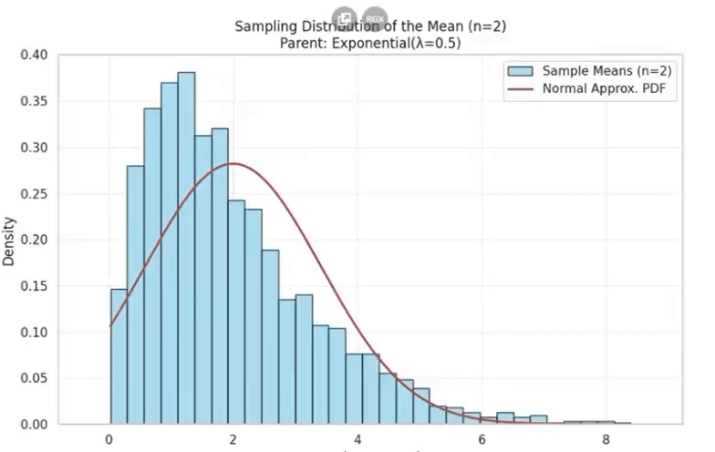
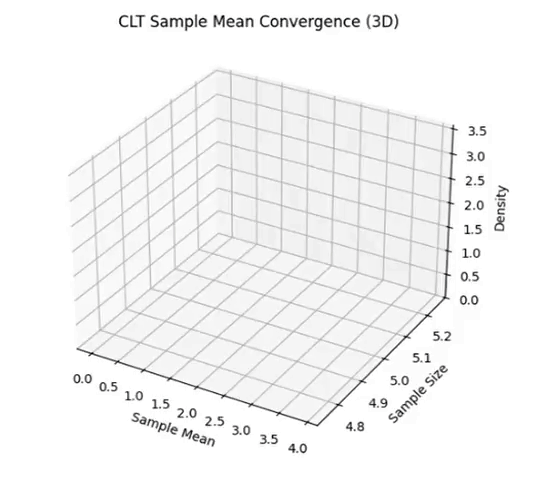
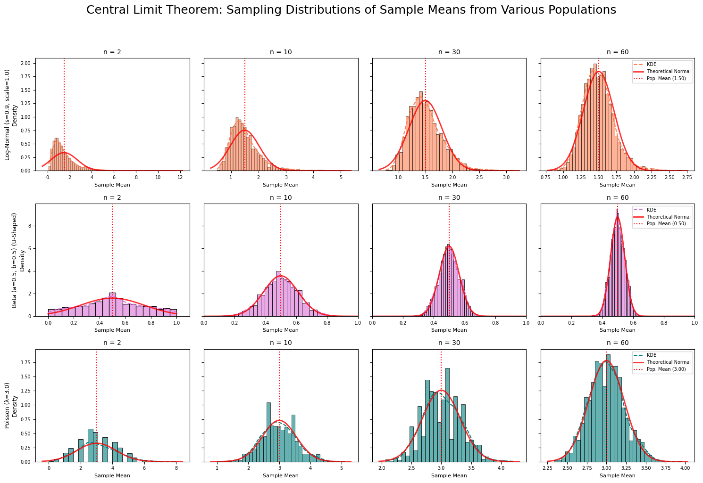

📊 Exploring the Central Limit Theorem through Simulations
🎯 Motivation
The Central Limit Theorem (CLT) tells us that:
\[
\text{As } n \to \infty,\ \bar{X}_n \sim \mathcal{N}(\mu, \sigma^2/n)
\]
So, even if the population is not normal, the mean of large samples will follow a normal distribution.
Simulations help us observe this behavior in action, making the abstract idea more intuitive.
🔧 Task Overview
1. Simulating Sampling Distributions
- We choose diverse population distributions to test the CLT:
- Uniform (flat shape)
- Exponential (skewed)
-
Binomial (discrete)
-
For each, we create large datasets to mimic full populations.
2. Sampling and Visualization
- For sample sizes: 5, 10, 30, 50, we take many random samples.
- We compute the mean of each sample.
- We plot histograms to show how sample means behave.
- These plots reveal how they become more bell-shaped.


3. Parameter Exploration
- We experiment with different distributions and sample sizes.
- We observe how higher variance causes wider sampling spread.
- We track how fast the normal shape appears.
4. Practical Applications
- Used to estimate population parameters.
- Important in quality control (e.g., factory outputs).
- Useful in finance to model uncertain outcomes.
📈 Deliverables
- Python notebooks showing the full simulation process.
- Histogram plots that illustrate sample mean behavior.
- Reflections on:
- How the CLT appears visually.
- Whether results match the theory.
💡 Tips
- Libraries like
NumPy,Matplotlib, andSeabornare helpful. - Start with simpler cases (e.g., Uniform) to build intuition.
- Focus on:
$$ \bar{X} = \frac{1}{n} \sum_{i=1}^{n} X_i, \quad \text{Var}(\bar{X}) = \frac{\sigma^2}{n} $$
🧠 Key Insight
As sample size grows:
- The original distribution’s shape matters less and less
- Sample means become normally distributed
- This supports using normal models in real-world problems
